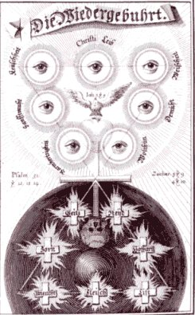
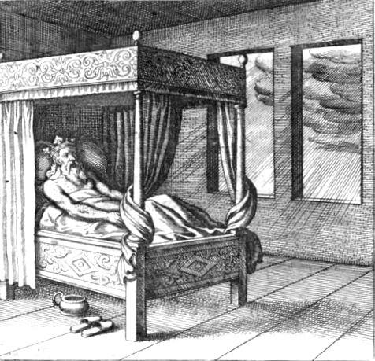

Emblema XIII.
revu le 4 mai 2002
Æs Philosophorum hydropicum est, & vul lavari septies in fluvio,
ut Naaman leprosus in Jordane.(L’airain des Sages est hydropique et il veut être lavé sept fois dans le fleuve, comme Naaman le lépreux dans le Jourdain.1)
L’airain des sages souffre, hydropique et bouffi :
Il désire les eaux qui portent le salut.
Comme dans le Jourdain Naaman perdit sa lèpre
Il se lave en ses propres eaux, trois, quatre fois.
Précipite tes corps au sein des douces ondes,
Ils y trouveront vite un remède à leurs maux2.
Que Naaman le Syrien, sur l’ordre du Prophète, se soit rendu en Judée et se soit baigné sept fois dans le fleuve Jourdain, il faut l’attribuer à sa confiance dans les paroles du prophète, mais qu’il ait été guéri de sa lèpre par cette ablution, c’est un miracle de la toute-puissance divine. Car la lèpre, qui s’attaque au sang et aux racines des membres de l’homme, est une sorte de chancre universel qui ne peut être guéri ou chassé par des lotions externes, encore moins par de l’eau froide comme celle du Jourdain. Il y a de même une espèce de miracle à ce que l’airain des philosophes souffrant d’hydropisie en soit délivré par des lotions d’eau, et qu’il soit en outre amené de l’imperfection à la perfection, de la maladie à la santé, au point de pouvoir impartir cette santé à d’autres malades. Il n’existe pas dans la nature d’autre exemple semblable et le chemin ordinaire de la nature ne la conduit pas à produire la teinture très parfaite des philosophes si elle n’est gouvernée par l’artiste et si les sujets convenables ne lui sont administrés avec l’agent externe3. De même réduire les luxations n’est pas le propre de la nature, mais de l’art. Pourtant, dans la génération de l’homme, l’os sacré s’ouvre d’une façon qui tient du miracle pour que le fœtus puisse sortir comme par une porte : le Dieu Très Bon et Très Grand opère là par la nature un effet qui dépasse la nature. De même la réalisation de la Pierre peut également paraître hyperphysique bien qu’elle soit en vérité physique. C’est pourquoi le Philosophe dit dans le Rosaire :
" Sache que notre pierre est aérienne et volatile, qu’elle est froide et humide dans son aspect visible, chaude et sèche dans son aspect caché. Cette froideur et cette humidité qui apparaissent sont une fumée aqueuse qui corrompt, noircit, se détruit et détruit toutes choses, fuit le feu. La chaleur et la sécheresse cachées constituent un or chaud et sec, c’est une huile très pure qui pénètre les corps ; cela ne fuit pas le feu, car la chaleur et la sécheresse de l’Alchymie teignent et rien d’autre. Fais donc en Sorte que la froideur et l’humidité aqueuse qui sont manifestées deviennent pareilles à la chaleur et à la sécheresse cachées, de manière qu’elles s’unissent, s’allient et deviennent ensemble une seule substance qui pénètre, teint, s’enfonce très profondément. Ces humidités doivent être détruites par le feu et les degrés de feu avec une douce modération, une digestion convenable et tempérée. "4
Si ces paroles sont vraies, comment pourra-t-il être libéré des eaux par les eaux ? Mais il faut répondre qu’il existe certaines eaux chaudes et sèches en qualité, comme le sont nombre d’eaux thermales, dans lesquelles l’airain philosophique doit être lavé. C’est ce qu’ils veulent dire par ces mots :
" Lave avec le feu et brûle avec l’eau. "5
Car le feu qui lave et l’eau qui brûle ne diffèrent l’un de l’autre que par le nom ; leurs effets et leurs opérations se rejoignent. Nous connaissons les méthodes essayées pour guérir les hydropiques : les priver de toute boisson pendant six mois, les ensevelir dans du sable chaud ou de la bouse de vache, les enfermer à l’intérieur ou au fond d’un four chaud, les faire transpirer,6 et d’innombrables autres moyens allant jusqu’aux eaux thermales desséchantes, telles que celles de Carlsbad et de Wiesbaden, non loin de Mayence. De même notre malade devra être traité successivement par les eaux, l’air chaud des fours, le fumier7, le sable et l’abstinence de boisson. Ce sont en effet des remèdes très efficaces dans les deux cas ; ils doivent être appliqués ici comme là. Dans tous ces traitements c’est la chaleur qui opère, fait sortir et disparaître les eaux superflues à travers leurs émonctoires et même les pores du corps. Car la chaleur extérieure excite la chaleur intérieure, c’est-à-dire les esprits vitaux, pour chasser comme excrément inutile l’humeur nocive qui jusque-là agissait en ennemie et supprimait la chaleur naturelle. Il faut procéder avec beaucoup de soin et de précaution dans cette cure pour éviter qu’un des viscères ne soit lésé pendant qu’on porte secours à un autre8. Dans la fièvre quarte (pierre de louche du médecin, suivant Platon) nous avons vérifié que les humeurs épaisses et visqueuses comme la gomme ou la glu des arbres se rassemblent en venant des veines et de la masse sanguine et descendent par la veine cave ou grande veine jusque dans la profondeur du dos. Là elles obstruent les veines d’évacuation qui extraient du sang l’humeur séreuse, ou tout au moins elles en bouchent les portes ; le fonctionnement de ces veines s’en trouve gêné et il demeure dans le corps une plus grande quantité d’humeur séreuse, en sorte que, si l’on n’y veille, l’hydropisie peut se déclarer même si au début les autres viscères étaient intacts.
Les diurétiques ne peuvent ici servir que peu ou pas du tout ; les purgatifs moins encore, à moins qu’au bout d’un certain temps il ne se fasse une diminution et une évacuation. Les sudorifiques eux-mêmes sont manifestement nuisibles, car ils évacuent les parties les plus subtiles, n’atteignent pas les plus épaisses et, si on les continue, ruinent les forces. La nature en effet a recours d’ordinaire à cette voie pour évacuer les sérosités par les pores lorsque la voie de la vessie est obstruée. L’une est donc Scylla et l’autre Charybde9 ; il convient de les éviter toutes deux si l’on veut voir loin en avant. Quant à l’hydropisie qui provient d’une lésion du foie ou de la rate, elle est difficile à guérir si elle est confirmée. Mais dans l’airain philosophique la guérison n’est pas impossible puisque l’atteinte est ici accidentelle et secondaire plutôt qu’essentielle et primaire, à condition que l’on commence avec précaution comme nous l’avons dit en parlant de la quantité de liquide dans la fièvre quarte. On évitera ainsi de tomber dans la consomption en desséchant à l’excès, ou dans une hydropisie difficile à guérir en humectant trop abondamment10.
Notes1. Il ne s'agit pas d'une allusion à l'étain [on parle de la lèpre de l'étain pour désigner son oxyde, qui se forme au contact de l'air]. Ce chapitre parle d'un problème que l'on rencontre au 3ème oeuvre : celui de ne pas brûler les fleurs, c'est-à-dire de ne pas donner un feu trop conséquent et qui, surtout, est trop rapidement réduit. Quand Maier dit que l'airain est hydropique, il veut signifer que les chaux métalliques sont dissoutes dans une assez grande quantité de Mercure, c'est-à-dire de fondant et que l'un des secrets de l'oeuvre consiste à faire volatiliser ce fondant le plus lentement possible. Philalèthe parle aussi de cette hydropisie [Introïtus, VI - note 13]. Nous l'avions alors interprétée comme relevant de la préparation de l'alun déshydraté [Fontenay]. Rappelons que l'alun calciné est un mélange du principal composant du Mercure mixé au Sel des sages. Il contracte aussi des rapports avec le pyrophore de Homberg.
2. Mais il est évident qu'il ne peut s'agir de l'alun calciné qui, précisément, est totalement déshydraté. La seule manière rationnelle de comprendre le texte est donc de faire l'hypothèse qu'il s'agit là du Rebis [homme double igné de Basile, représenté par Maier avec une tête masculine sur un corps féminin], c'est-à-dire des chaux métalliques dissoutes, non encore réincrudées. La réincrudation est l'objet même de la « déshydratation » progressive conduisant à la coagulation de l'eau mercurielle. Ceci, entre parenthèse, permet pleinement d'expliquer l'allusion au « larron » de Philalèthe, ce larron n'étant autre que le Mercure [cf. Introïtus, VI]. Il est nettement plus difficile de comprendre les allusions aux réitérations [sept fois] de la même technique. Le chiffre 7, on le sait, renvoie à Apollon, c'est-à-dire au Soleil ou, en tout cas, au composé mâle du Rebis, le Soufre rouge. Le chiffre 7 dépasse toutefois ce symbolisme, car il renvoie aussi à la septième lettre de l'alphabet : G, initiale de Gaia, la Terre. Ce point a été abordé à la section des Gardes du corps. Il semble donc y avoir un rapport entre les sept ablutions dans l'eau du Jourdain, permettant à Naaman [le Rebis] d'acquérir une forme plus noble en se lavant de ses « ordures lépreuses ».
FIGURE I
(extrait de Jacob Bôhme, Theosophische Wercken, 1682 : les sept ablutions mercurielles)La figure I exprime de manière saisissante le contraste où blancheur et noirceur paraissent, par le truchement de la croix, comme leur réciproque reflet. La tête de mort apparaît comme l'antithèse de la colombe et la croix figure les roches cyanées ou symplégades.
3. L'agent externe est le Mercure qui ne participe en rien à la pierre. Quant aux sujets de l'oeuvre, ils sont voilés sous diverses allégories, dont celle de la fable des deux colombes de Diane, inventée par Philalèthe. Le passage de la maladie à la santé semble trouver sa correspondance physique - et non chimique - dans la transformation de corps amorphes en corps cristallins.
4. le Rosaire parles des quatre Eléments ; nous les avons évoqué en commentant les Douze portesde Ripley et en consultant l'Atlas des Connaissances humaines de Chevreul. L'aspect visible de la Pierre renvoie à la forme que présente ses composants dans le Mercure : aérien et volatil d'une part et froid et humide de l'autre. C'est nommer ainsi l'AIR et l'EAU, éléments immédiats de ce Mercure. En ces deux éléments, la Pierre apparaît visible, mais démembrée. Chaude et sèche dans sa partie cachée, c'est nommer les Soufres, qui déterminent les parties de TERRE et de FEU. Terre par le Sel et Feu par le Soufre rouge ou teinture. La froideur qui « se détruit et détruit toute chose » représente le Mercure philosophique ou serpent Ouroboros de la Chrysopée de Cléopâtre. La chaleur est bien nommée « or » et c'est effectivement une huile qui pénètre le corps. Plus précisément, il s'agit de l'accrétion des Soufres par laquelle débute la période d'assation décrite par Fulcanelli et qui est voilée par le signe du Sagittaire [Fontenay - cf. Atalanta, XLIX] . Dans la dernière phrase, l'auteur apocryphe prescrit les degrés de feu requis pour cette opération qui vise à obtenir la coagulation très lente et progresive de l'eau mercurielle.
5. citation de Basile Valentin. Il est remarquable que tout le secret du Mercure puisse être réduit à cette phrase laconique...C'est vraiment du surréalisme avant la lettre.
6. Cette allégorie de la transpiration a été exploitée par Lambsprinck dans le De Lapide Philosophorum. Elle est en relation avec une période où l'on voit la pluie tomber sous la forme de rosée [le Rosaire] ou sous forme vulgaire. Les alchimistes veulent alors signifier qu'ils « brûlent avec l'eau ».
FIGURE II
(le Roi doit être guéri de son hydropisie - De Lapide Philosophorum, Lambsprinck)7. pour le fumier, cf. section Cosmopolite. Pour le sable, cf. section Blasons alchimiques.
8. C'est ce que les Artistes appellent « brûler les fleurs ». Notez qu'il est aussi facile de brûler en chauffant par le feu qu'en refroidissant par le gel. Car dans les deux cas, il s'agit d'une brûlure.
9. la légende de Charybde et Scylla : fille de Poséïdon et de Gaïa [donc au plan hermétique, tenant de la TERRE et de Protée, lui-même fils de Poséïdon, par l'EAU], Charybde engloutit trois fois par jour [cela n'évoque-t-il pas les trois sublimations philosphiques ?] d'énormes paquets d'eau dans des mugissements terrifiants [nous ne sommes pas loin de titanoV; on sait que la chaux vive s'éteint avec un bruit qui rappelle celui que fait une épée plongée dans l'eau] ; quant à Scylla, il nous suffit déjà de savoir qu'elle a pu [selon la version] être enfantée de Typhon et d'Echidna ; nous avons déjà étudié le symbolisme d'Echidna dans la section des Gardes du corps à l'occasion de l'examen des Douze Travaux d'Hercule. Il est clair qu'ici, plusiurs légendes se croisent et l'on est fondé à penser qu'il existe des rapports évidents entre le mythe des Argonautes et le voyage de Jason et Enée. Voyez par exemple, les degrés de parenté existant entre Cerbère, Typhon et Echidna [cf. Atalanta, XLIV]. Scylla contracte des rapports avec la transformation des corps : Circé prépara, sur la demande de Glaucos, amoureux éconduit de Scylla, qui était très belle, un poison végétal qu'elle versa dans la fontaine où la nymphe avait coutume de se baigner. Lorsque Scylla s'y plongea [dissolution des corps], son corps, aux formes si parfaites, se métamorphosa en un monstre pourvu de six pattes griffues et de six têtes de chien, qui, ouvrant leurs gueules énormes, hurlaient comme des lions et découvraient trois rangées de dents. Il s'agit là d'un monstre qui a des traits de Chimère et dont l'aspect est littéralement parlant, protéiforme. Voici par ailleurs ce que dit Pernety, dans ses Fables Egyptiennes et Grecques au sujet des roches cyanées et de Charybde et Scylla :Orphée, ou l'inventeur de cette relation du voyage des Argonautes, étant au fait de l'oeuvre, il ne lui fut pas difficile de leur faire dire par Phinée la route qu'ils devaient tenir, et ce qu'ils devaient faire dans la suite ; ausii le sage et prudent Pilote Orphée [que l'on peut identifier par cabale au pilote de l'onde vive,TijuV, le pilote des Argonautes] les conduit-il au son de la guitare [lyre], et leur dit ce qu'il faut faire pour les garantir des dangers dont ils sont menacés par les Syrtes, les Syrenes, Scylla, Carybde, les Roches cyanées, et tous les autres écueils. Ces deux derniers [roches cyanées] sont deux amas de rochers à l'entrée du Pont-Euxin, d'une figure irrégulière, dont une partie est du côté de l'Asie [regardant vers l'Orient à Lucifer], l'autre de l'Europe [l'Occident à Vesper] ; et qui ne laissent entre eux, selon Strabon, qu'un espace de vingt stades. Les Anciens disaient que ces rochers étaient mobiles, et qu'ils se rapprochaient pour engloutir les vaisseaux, ce qui leur fit donner le nom de Symplegades, qui signifie, qu'ils s'entrechoquaient.Notez que les Argonautes eurent, plus tard, un second pilote [cf. Atalanta, XLVII]. Voici un autre extrait où l'expression « tomber de Charybde en Scylla » voit son sens éclairé pour notre propos :[Ainsi s'explique l'allusion aux talons ailés de Mercure représenté dans les Figures Hiéroglyphiques ; l'ouvrier assurant la bonne marche d'un four à chaux ou chaufournier se traduit par calcarius dont une autre acception est l'expression : tomber de Charybde en Scylla, souvent employée par Fulcanelli et qui se rapporte aux corps dont la fixité n'est pas encore totale.]Cette fixité qu'il s'agir d'aquérir fait l'objet du chapitre de Maier qui consiste en un savant dosage de l'EAU afin de déterminer l'apparition de la TERRE ou Délos. Notre opinion se trouve confortée par cet extrait des Demeures Philosophales :Un excès de feu gâte tout ; cependant si l'amalgame philosophique est simplement rougi, et non calciné, il est possible de le régénérer en le dissolvant de nouveau, selon le conseil du Cosmopolite [...] N'activez pas trop la flamme à l'intérieur de votre lanterne, et veillez à ne point la laisser s'éteindre : vous tomberiez de Charybde en Scylla. [DM, II, p. 74]Nous voici donc fixé sur la conduite à tenir dans la marche du feu. Scylla et Charybde désignent ces monstres fabuleux, ou rochers de la mer Méditerranée, contre lesquels les vaisseaux se brisent. Les Argonautes ne les évitèrent [Pernety, Fables Egypt. et Grecq., livre 2, chap. 1] qu'en envoyant une colombe qui leur servit de guide. C'est dans le même esprit que doit ici raisonner l'Artiste dans cette période cruciale de l'Oeuvre. La lanterne figure le Feu elémentaire, c'est-à-dire celui du Mercure que ne fait qu'exciter le feu vulgaire.
10. cf. note 8. Au total, il faut éviter l'excès de sudation du Rebis qui conduit à son démembrement par excès de volatilisation, surtout trop précoce du Mercure et éviter son « hydropisie » qui gâte tout et ne permet pas la coagulation d'où dépend la transformation en structure cristalline.